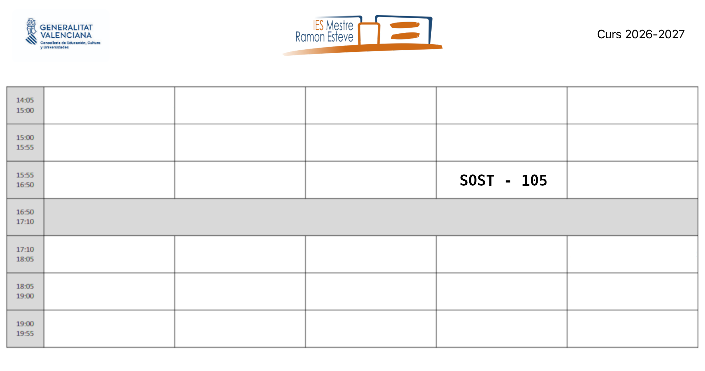

Presentación módulo
1 - Calendario escolar

2 - Horario de sesiones

3 - Contenidos del módulo
Contenidos disponibles aquí.
Análisis de la situación actual: problemas, impactos y medida de impactos
- Identificación de los principales retos ambientales y sociales:
- Cambio climático.
- Contaminación del aire, agua y suelo.
- Pérdida de biodiversidad.
- Agotamiento de recursos naturales.
- Desigualdad social y económica.
- Pobreza.
- Desplazamiento forzado y migración.
- Discriminación y exclusión social.
- Relación entre los retos ambientales y sociales y el desarrollo de la actividad económica:
- Impacto de la actividad industrial, agrícola, energética, etc., en los retos ambientales y sociales.
- Influencia de las políticas económicas y comerciales en la exacerbación o mitigación de los retos.
- La medida de los impactos sobre el medio ambiente:
- Evaluación del impacto ambiental.
- La huella de carbono.
- Análisis del efecto de los impactos ambientales y sociales sobre las personas y los sectores
- Impacto en la salud humana.
- Riesgos para la seguridad alimentaria.
- Interrupción de cadenas de suministro y producción.
- Aumento de costos y pérdida de productividad.
- Identificación de medidas y acciones para minimizar los impactos ambientales:
- Fomento de la economía circular y el consumo sostenible.
- Medidas de descarbonización de la economía:
- Implementación de tecnologías limpias y prácticas sostenibles.
- Promoción de la eficiencia energética y el uso de energías renovables.
- Electrificación de la demanda.
- Cambios en procesos industriales y agrícolas.
- Medidas de adaptación al cambio climático.
- Medidas de compensación de emisiones de GEI.
- Importancia de establecer alianzas y trabajar de manera transversal y coordinada:
- Colaboración entre empresas, gobierno, ONGs y la sociedad civil.
- Necesidad de compartir recursos, conocimientos y buenas prácticas.
- Importancia de la cooperación internacional para abordar problemas globales.
Iniciativas internacionales, europeas y nacionales para afrontar esos problemas
- Introducción a la sostenibilidad y desarrollo sostenible:
- Definición del concepto de sostenibilidad.
- Explicación del desarrollo sostenible y su importancia.
- Acciones encaminadas a lograr un desarrollo sostenible:
- Marco internacional de referencia: Agenda 2030, los Objetivos de Desarrollo Sostenible (ODS), Acuerdo de París, el marco de Sendai y la agenda de Addis Abeba.
- La lucha contra el cambio climático:
- Acciones a nivel internacional.
- Acciones a nivel europeo.
- Acciones a nivel nacional.
- La protección de la biodiversidad:
- Acciones a nivel internacional.
- Acciones a nivel europeo.
- Acciones a nivel nacional.
Productos y actividades sostenibles
- Aplicación de criterios de sostenibilidad en el desempeño profesional y personal:
- Descripción de la actividad profesional y su impacto en la sociedad, la economía y el medio ambiente.
- Análisis de cómo los ODS se relacionan con esa actividad profesional.
- Identificación de los riesgos y las oportunidades, ambientales y sociales, asociados con el incumplimiento o la contribución a los ODS (Sinergias y Trade-offs o compensaciones).
- Integración de los ODS en la estrategia profesional y/o en la planificación de la intervención:
- Definición de objetivos y acciones específicas para contribuir al logro de esos ODS en el área de trabajo, una vez identificados los ODS pertinentes.
- Identificación de acciones necesarias para abordar retos ambientales y sociales desde la actividad profesional y personal:
- Desarrollo de estrategias para integrar los ODS en la práctica profesional y en la vida cotidiana.
- Identificación de acciones concretas que pueden implementarse para contribuir a los ODS.
- Exploración de cómo estas acciones pueden tener un impacto positivo tanto a nivel individual como en la comunidad y el entorno laboral.
- Evaluación continua para ajustar las acciones según sea necesario y maximizar el impacto de la empresa en el desarrollo sostenible.
- Caracterización del modelo de producción y consumo actual:
- Modelo macroeconómico actual.
- Descripción de los principales aspectos del modelo lineal de producción y consumo.
- Identificación de sus impactos ambientales y sociales.
- Identificación de los principios de la economía verde y circular:
- Explicación de los principios fundamentales de la economía verde.
- Explicación de los principios fundamentales de la economía circular (la minimización de residuos, la reutilización, el reciclaje y la renovabilidad de recursos).
- Tipos de reciclaje.
- Los distintos metabolismos de la economía circular.
- Contraste de los beneficios de la economía verde y circular frente al modelo clásico de producción:
- Análisis y comparación de los beneficios ambientales, sociales y económicos de la economía verde y circular.
- Exploración de casos de estudio que demuestren los efectos positivos de la transición hacia la economía circular.
- Concepto de desacoplamiento entre crecimiento económico y consumo de recursos.
- Estrategias europeas y españolas de economía circular: planes y proyectos.
- Aplicación de los principios de ecodiseño y diseño sostenible:
- Concepto de ecodiseño y diseño sostenible. Aplicación en el desarrollo de productos y servicios.
- Identificación de estrategias de diseño que minimicen el impacto ambiental a lo largo del ciclo de vida del producto.
- Análisis del ciclo de vida del producto y su proceso de producción:
- Concepto de ciclo de vida del producto.
- Impactos ambientales, sociales y económicos asociados con todas las etapas del ciclo de vida del producto (diseño, extracción de materias primas, fabricación, acondicionamiento, embalaje, distribución, consumo final y desecho).
- Perspectiva de sostenibilidad a lo largo del ciclo de vida del producto.
- Certificación y etiquetado de productos:
- Certificaciones públicas.
- Certificaciones privadas.
Sostenibilidad Empresarial
- Conceptos empresariales básicos previos:
- Definición de cadena de valor de una empresa.
- Definición de grupos de interés, internos y externos, y sus expectativas.
- Definición de impactos de nivel 1, 2 y 3 aplicados a toda la cadena de suministro.
- Concepto de ASG o ESG:
- Definición e importancia de ASG o ESG.
- Análisis de los riesgos y oportunidades que presentan para las empresas.
- Los aspectos sociales. Acciones relacionadas con:
- Condiciones laborales y derechos humanos.
- Diversidad, igualdad e inclusión.
- Participación en la comunidad, en su bienestar y su desarrollo.
- Seguridad del producto y protección de los consumidores.
- Compromisos con los proveedores.
- Los aspectos ambientales. Acciones relacionadas con:
- Protección de la biodiversidad.
- Emisiones de gases de efecto invernadero y cambio climático. Medición de alcance 1, 2 y 3.
- Gestión del agua.
- Control de la contaminación.
- Energías renovables y eficiencia energética.
- Gestión de residuos y programas de reciclaje.
- Los aspectos de gobernanza. Medidas relacionadas con:
- Gobierno corporativo.
- Transparencia y comunicación responsable. Greenwashing, lavado verde o ecolavado. Social washing o lavado social.
- Políticas de anticorrupción y antisoborno.
- Respeto a la normativa y contribución a los impuestos.
- Evitar la participación en grupos de presión (lobbies).
- Medida de las estrategias ASG:
- Indicadores ASG. Necesidad y ejemplos más relevantes.
- Informes de sostenibilidad:
- Normativa europea sobre informes de sostenibilidad.
- Normativa española sobre informes de sostenibilidad.
- Certificación ASG.
- El papel de los inversores en la sostenibilidad:
- Concepto de Inversión y capital socialmente responsable.
- Fondos ISR (Inversión Socialmente Responsable).
- Índices bursátiles relacionados con el AGS y otros indicadores de sostenibilidad.
- Concepto de Inversión y capital socialmente responsable.
- Los planes de sostenibilidad:
- Concepto de plan de sostenibilidad.
- Fases para su elaboración:
- Compromiso de la alta dirección.
- Diagnóstico.
- Recopilación de datos. Digitalización.
- Análisis de doble materialidad.
- Plan director.
- Plan de comunicación.
- Estrategias de seguimiento y mejora continua.
- Indicadores de desempeño.
- Análisis de planes de sostenibilidad, especialmente de empresas del sector profesional
4 - Metodología de aprendizaje
- Exposición de los aspectos teóricos para que después sean aplicados mediante prácticas y ejercicios.
- La metodología de trabajo será el Aprendizaje Basado en Problemas (ABP/PBL). Se propondrá un problema real y los alumnos tendrán que buscar una solución, justificándola y comprobando que funciona. Además, si procede, incluirán un pequeño estudio de necesidades y costes para valorar su viabilidad.
- Las prácticas podrán ser individuales o colectivas.
- Realización de actividades voluntarias de investigación y ampliación para profundizar en los conocimientos adquiridos.
- Proyección de vídeos.
5 - Evaluación
- La evaluación se hará por resultados de aprendizaje RA. R.D. 659/2023.
- Los resultados de aprendizaje y criterios de evaluación asociados al módulo Servicios en red constituyen los logros que los alumnos/as tienen que alcanzar para superar el módulo.
- Cada resultado de aprendizaje RA se evalúa a través de los criterios de evaluación CE. Los CE actúan como “desglose” del RA, facilitando medir de forma objetiva si el aprendizaje se ha alcanzado.
5.1 - Relación entre Criterios de Evaluación y Resultados de Aprendizaje
Los criterios de evaluación asociados a los resultados de aprendizaje del módulo Servicios en red son los siguientes:
| RA1. Identifica los aspectos ambientales, sociales y de gobernanza (ASG) relativos a la sostenibilidad teniendo en cuenta el concepto de desarrollo sostenible y los marcos internacionales que contribuyen a su consecución. | Peso |
|---|---|
| a) Se ha descrito el concepto de sostenibilidad, estableciendo los marcos internacionales asociados al desarrollo sostenible. | 15% |
| b) Se han identificado los asuntos ambientales, sociales y de gobernanza que influyen en el desarrollo sostenible de las organizaciones empresariales. | 15% |
| c) Se han relacionado los Objetivos de Desarrollo Sostenible (ODS) con su importancia para la consecución de la Agenda 2030. | 15% |
| d) Se ha analizado la importancia de identificar los aspectos ASG más relevantes para los grupos de interés de las organizaciones relacionándolos con los riesgos y oportunidades que suponen para la propia organización. | 15% |
| e) Se han identificado los principales estándares de métricas para la evaluación del desempeño en sostenibilidad y su papel en la rendición de cuentas que marca la legislación vigente y las futuras regulaciones en desarrollo. | 20% |
| f) Se ha descrito la inversión socialmente responsable y el papel de los analistas, inversores, agencias e índices de sostenibilidad en elfomento de la sostenibilidad. | 20% |
| RA2. Caracteriza los retos ambientales y sociales a los que se enfrenta la sociedad, describiendo los impactos sobre las personas y los sectores productivos y proponiendo acciones para minimizarlos. | Peso |
|---|---|
| a) Se han identificado los principales retos ambientales y sociales. | 20% |
| b) Se han relacionado los retos ambientales y sociales con el desarrollo de la actividad económica. | 20% |
| c) Se ha analizado el efecto de los impactos ambientales y sociales sobre las personas y los sectores productivos. | 20% |
| d) Se han identificado las medidas y acciones encaminadas a minimizar los impactos ambientales y sociales. | 20% |
e) Se ha analizado la importancia de establecer alianzas y trabajar de manera transversal y coordinada para abordar con éxito los retos ambientales y sociales. |
20% |
| RA3. Establece la aplicación de criterios de sostenibilidad en el desempeño profesional y personal, identificando los elementos necesarios. | Peso |
|---|---|
| a) Se han identificado los ODS más relevantes para la actividad profesional que realiza. | 40% |
| b) Se han analizado los riesgos y oportunidades que representan los ODS. | 30% |
c) Se han identificado las acciones necesarias para atender algunos de los retos ambientales y sociales desde la actividad profesional y elentorno personal. |
30% |
| RA4. Propón productos y servicios responsables teniendo en cuenta los principios de la economía circular. | Peso |
|---|---|
| a) Se ha caracterizado el modelo de producción y consumo actual. | 20% |
| b) Se han identificado los principios de la economía verde y circular. | 20% |
| c) Se han contrastado los beneficios de la economía verde y circular frente al modelo clásico de producción. | 15% |
| d) Se han aplicado principios de ecodiseño. | 15% |
| e) Se ha analizado el ciclo de vida del producto. | 15% |
| f) Se han identificado los procesos de producción y los criterios de sostenibilidad aplicados. | 15% |
| RA5. Realiza actividades sostenibles minimizando el impacto de las mismas en el medio ambiente. | Peso |
|---|---|
| a) Se ha caracterizado el modelo de producción y consumo actual. | 10% |
| b) Se han identificado los principios de la economía verde y circular. | 10% |
| c) Se han contrastado los beneficios de la economía verde y circular frente al modelo clásico de producción. | 10% |
| d) Se ha evaluado el impacto de las actividades personales y profesionales. | 10% |
| e) Se han aplicado principios de ecodiseño. | 10% |
f) Se han aplicado estrategias sostenibles. |
10% |
| g) Se ha analizado el ciclo de vida del producto. | 10% |
| h) Se han identificado los procesos de producción y los criterios de sostenibilidad aplicados. | 15% |
| i) Se ha aplicado la normativa ambiental. | 15% |
| RA6. Analiza un plan de sostenibilidad de una empresa del sector, identificando sus grupos de interés, los aspectos ASG materiales y justificando acciones para su gestión y medición. | Peso |
|---|---|
| a) Se han identificado los principales grupos de interés de la empresa. | 20% |
| b) Se han analizado los aspectos ASG materiales, las expectativas de los grupos de interés y la importancia de los aspectos ASG en relación con los objetivos empresariales. | 20% |
| c) Se han definido acciones encaminadas a minimizar los impactos negativos y aprovechar las oportunidades que plantean los principales aspectos ASG identificados. | 20% |
| d) Se han determinado las métricas de evaluación del desempeño de la empresa de acuerdo con los estándares de sostenibilidad más ampliamente utilizados. | 20% |
| e) Se ha elaborado un informe de sostenibilidad con el plan y los indicadores propuestos. | 20% |
5.2 - Metodología de evaluación
- La evaluación será contínua.
- Se basará en la comprobación de la superación de los resultados de aprendizaje (RA).
- La evaluación se hará sobre todos los RA y todos los CE del currículo.
5.3 - Instrumentos de evaluación
- Exámenes.
- Preguntas tipo test.
- Examen escrito (ejercicios).
- Entrega de tareas.
- Exposiciones orales.
- Prácticas en empresa.
5.4 - Responsable evaluación de los RA's y/o CE's
-
Evaluación por profesor:
Todos los que no serán evaluados en empresa. -
Evaluación por tutor empresa (dualización de los RA y CE):
| Criterios de evaluación. |
|---|
| e) Se ha analizado la importancia de establecer alianzas y trabajar de manera transversal y coordinada para abordar con éxito los retos ambientales y sociales. |
| Criterios de evaluación. |
|---|
| c) Se han identificado las acciones necesarias para atender algunos de los retos ambientales y sociales desde la actividad profesional y elentorno personal. |
| Criterios de evaluación. |
|---|
| f) Se han aplicado estrategias sostenibles. |
6 - Criterio de superación del módulo
6.1 - Nota final
La nota final será la suma ponderada de los resultados de aprendizaje obtenidos en cada evaluación.
La superación del módulo requerirá obtener una media mínima de 5 sobre 10 en cada resultado de aprendizaje.
En caso de no superar el módulo, el alumna/o dispondrá de un proceso de recuperación orientado a reforzar específicamente los resultados de aprendizaje no alcanzados.
| Resultado de aprendizaje | Porcentage |
|---|---|
| RA1. Identifica los aspectos ambientales, sociales y de gobernanza (ASG) relativos a la sostenibilidad teniendo en cuenta el concepto de desarrollo sostenible y los marcos internacionales que contribuyen a su consecución. | 18% |
| RA2. Caracteriza los retos ambientales y sociales a los que se enfrenta la sociedad, describiendo los impactos sobre las personas y los sectores productivos y proponiendo acciones para minimizarlos. | 17% |
| RA3. Establece la aplicación de criterios de sostenibilidad en el desempeño profesional y personal, identificando los elementos necesarios. | 15% |
| RA4. Propón productos y servicios responsables teniendo en cuenta los principios de la economía circular. | 17% |
| RA5. Realiza actividades sostenibles minimizando el impacto de las mismas en el medio ambiente. | 17% |
| RA6. Analiza un plan de sostenibilidad de una empresa del sector, identificando sus grupos de interés, los aspectos ASG materiales y justificando acciones para su gestión y medición. | 16% |
6.2 - Instrumentos de recuperación
- Se propondrá a los alumnos una serie de recuperaciones que le permitirán recuperar los criterios de evaluación no superados. Esas recuperaciones podrán ser ejercicios o exámenes.
- Si el alumno no entrega los trabajos obligatorios o presenta tasas de absentismo elevadas, perderá la evaluación contínua y para aprobar el módulo, deberá presentarse a la evaluación ordinaria y/o extraordinaria.
6.3 - Calendario de evaluaciones
- Evaluación inicial (primer mes).
- Una evaluación parcial por cada trimestre.
- Se daran las notas de los RA completados y también la nota parcial de los RA incompletos.
- Para tener el aprobado será necesario haber alcanzado una puntuación superior o igual a 5 en los Resultados de Aprendizaje RA completados.
- Evaluación ordinaria y extraordinaria: Permitirán recuperar los RA no superados.
7 - Secuenciación y duración de cada Unidad de Trabajo
flowchart TB
A["`**UT 1 / RA1**
Identifica los aspectos ambientales, sociales y de gobernanza (ASG) relativos a la sostenibilidad teniendo en cuenta el concepto de desarrollo sostenible y los marcos internacionales que contribuyen a su consecución.`"]
C["`**UT 2 / RA2**
Caracteriza los retos ambientales y sociales a los que se enfrenta la sociedad, describiendo los impactos sobre las personas y los sectores productivos y proponiendo acciones para minimizarlos.`"]
G["`**UT 3 / RA3**
Establece la aplicación de criterios de sostenibilidad en el desempeño profesional y personal, identificando los elementos necesarios.`"]
H["`**UT 4 / RA4**
Propón productos y servicios responsables teniendo en cuenta los principios de la economía circular.`"]
E["`**UT 5 / RA5**
Realiza actividades sostenibles minimizando el impacto de las mismas en el medio ambiente.`"]
D["`**UT 6 / RA6**
Analiza un plan de sostenibilidad de una empresa del sector, identificando sus grupos de interés, los aspectos ASG materiales y justificando acciones para su gestión y medición.`"]
classDef texto font-size:1.1em;
classDef principal font-size:1.4em;
class A,B,C,D,E,F,G,H,I,J,K texto;
subgraph "`**Orden y duración de las UT**`"
AAA["6h."]
CCC["5h."]
GGG["4h."]
HHH["5h."]
EEE["5h."]
DDD["4h."]
subgraph "`**UT6**`"
direction LR
D --> DDD
end
subgraph "`**UT5**`"
direction LR
E --> EEE
end
subgraph "`**UT4**`"
direction LR
H --> HHH
end
subgraph "`**UT3**`"
direction LR
G --> GGG
end
subgraph "`**UT2**`"
direction LR
C --> CCC
end
subgraph "`**UT1**`"
direction LR
A --> AAA
end
class AA,BB,CC,DD,EE,FF,GG,HH,II,JJ,KK texto;
class AAA,BBB,CCC,DDD,EEE,FFF,GGG,HHH,III,JJJ,KKK texto;
end| Licencia Creative Commons: | |
|---|---|
 |
Reconocimiento-NoComercial-CompartirIgual CC BY-NC-SA: No se permite un uso comercial de la obra original ni de las posibles obras derivadas, la distribución de la cuales se debe hace con una licencia igual a la que regula la obra original. |